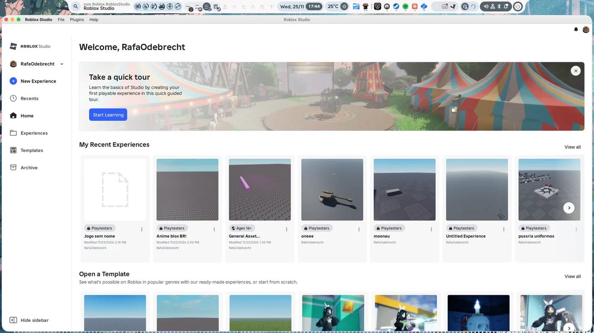
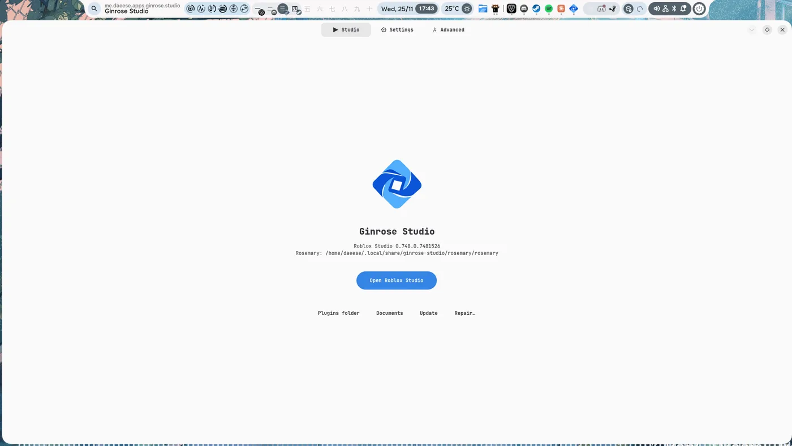

Ginrose Studio
Ginrose Studio
Roblox Studio for Mac, running right on your Linux desktop.
A community open-source launcher. It downloads the official Roblox Studio for macOS and runs it through Rosemary on Linux, sharing its code with Ginrose.
- Linux
- x86_64


Ginrose Studio is an independent community project, not an official Roblox tool. It is not affiliated with or endorsed by Roblox Corporation.
Ginrose Studio is free and open-source software under GPL-3.0-or-later, built from the same source as Ginrose. Modified versions must use their own name; the Ginrose Studio name, logo and application ID are covered by the project’s trademark policy.
Latest updates
Current version
- year
- 26
- major
- 0
- features
- 5
- fixes
- 0
Released November 23, 2026. Studio’s dialogs now float on tiling compositors such as Hyprland, and Rosemary moves to newer upstream work with fixes for Metal shader libraries.
- Latest
26.0.5.1 · November 26, 2026 — Helper programs are started by their full path, as Ginrose now does to open on FreeBSD. Nothing changes on Linux, and Rosemary is the same as in 26.0.5.0.
26.0.5.0 · November 23, 2026 — Studio’s dialogs, such as the one that sets up the server when a place opens, now float on tiling compositors such as Hyprland instead of being tiled next to Studio. Rosemary moves to newer upstream work, with fixes for Metal shader libraries.
26.0.4.0 · November 20, 2026 — Versions are now numbered by year: the year, then major changes, new features and fixes. Nothing else changes in Ginrose Studio; Rosemary is the same as in 0.3.9.
0.3.9 · November 19, 2026 — Same Rosemary as Ginrose 0.3.9, with keyboard input in popup windows, including input methods there, and faster OpenGL calls. The prefix stays on MiniDarwin 21. Ginrose Studio has no FreeBSD build yet.
0.3.8 · November 18, 2026 — Same Rosemary as Ginrose 0.3.8, including a fix for WebKit crashing in a Flatpak, which Studio’s login runs in. First launch upgrades the prefix to MiniDarwin 21, which Studio 0.3.7 and older cannot reuse.
0.3.7 · November 13, 2026 — Dragging works across selection boxes and the Move, Scale and Rotate handles. Control acts as Command in all shortcuts by default: Ctrl+S saves, Ctrl+D duplicates and Ctrl+1–4 select tools. Uses the same Rosemary as Ginrose 0.3.7; first launch upgrades the prefix to MiniDarwin 17, which Studio 0.3.6 and older cannot reuse.
0.3.6 · November 9, 2026 — Same Rosemary as Ginrose 0.3.6: upstream main with Ginrose’s open pull requests. On its first launch it updates the prefix, which older versions then refuse.
0.3.5 · November 8, 2026 — Downloading Ginrose's Rosemary outside the Flatpak is no longer cut off after 30 seconds on slower connections.
0.3.4 · November 6, 2026 — The rosemary command reports an error when it cannot save the new Rosemary selection. The installer keeps a Roblox Studio link handler another app already has.
0.3.3 · November 6, 2026 — The same Rosemary as Ginrose 0.3.3: presentation no longer waits for the previous frame.
0.3.2 · November 5, 2026 — The same Rosemary as Ginrose 0.3.2: smoother frame pacing, less CPU per draw, and on Wayland the cursor goes where Studio puts it.
0.3.1 · November 1, 2026 — Native packages for Arch, Debian, Ubuntu, Fedora and openSUSE, with the same build as the Flatpak, plus a Nix flake and a Gentoo ebuild. The Rosemary settings and the setup list the runners Butter installed, in the Flatpak too.
0.3.0 · October 31, 2026 — First release of Ginrose Studio, together with Ginrose 0.3.0 on Rosemary 0.5.0. Includes in-app drag and drop for Qt apps and lower CPU use while idle.
GINROSE-STUDIO(1)LinuxGINROSE-STUDIO(1)
Documentation
Name
ginrose-studio — A community open-source launcher for the official Roblox Studio macOS app.
Systems
Linux on x86_64, through the Flatpak or a native package for Arch, Debian, Ubuntu, Fedora or openSUSE, plus a Nix flake and a Gentoo ebuild. Ginrose Studio has no FreeBSD build yet.
Install
You need Flatpak and an x86_64 computer. The installer downloads the latest release, checks it against SHA256SUMS, installs the GNOME runtime from Flathub and Ginrose Studio for your user, and preserves any app already assigned to Studio links. If needed, use the handler command below to select Ginrose Studio. Nothing needs root:
curl -fsSL https://raw.githubusercontent.com/nunreasonable/ginrose-studio/main/install.sh | shOr download me.daeese.apps.ginrose.studio.flatpak and SHA256SUMS from the latest release and run these commands in the download folder:
sha256sum -c --ignore-missing SHA256SUMS
flatpak remote-add --user --if-not-exists flathub https://dl.flathub.org/repo/flathub.flatpakrepo
flatpak install --user flathub org.gnome.Platform//51
flatpak install --user me.daeese.apps.ginrose.studio.flatpakOn the first run, setup downloads the official Roblox Studio (about 600 MB). Ginrose and Ginrose Studio can be installed side by side; each keeps its own settings and files.
Native packages
Each release also has the same build as a distribution package, for those who would rather not use Flatpak. They need glibc 2.39, GTK 4.14 and libadwaita 1.6 or newer: Debian 13, Ubuntu 25.04, Fedora 42 or later, openSUSE Tumbleweed and Arch have them. Download the one for your distribution from the latest release, then run:
sudo pacman -U ginrose-studio-bin-26.0.5.1-1-x86_64.pkg.tar.zst # Arch
sudo apt install ./ginrose-studio_26.0.5.1_amd64.deb # Debian, Ubuntu
sudo dnf install ./ginrose-studio-26.0.5.1-1.x86_64.rpm # Fedora
sudo zypper install ./ginrose-studio-26.0.5.1-1.x86_64.rpm # openSUSERosemary is not part of these packages: Ginrose Studio uses a rosemary on your PATH, such as the one in the AUR, or downloads one in its setup, which then needs SDL 3.4 and OpenAL, and Studio's login needs WebKitGTK 6.0. NixOS has a flake that builds Ginrose Studio with Rosemary included, and Gentoo has an ebuild in rosemary-gentoo-overlay; both build from source.
Packaging recipes ↗Rosemary in the Flatpak
The Flatpak bundles Rosemary from upstream main with Ginrose’s open pull requests, including drag and drop between Studio’s panels and lower CPU use while idle. Rosemary is a separate GPL-3.0 component. Unlike Ginrose, Ginrose Studio also lets you choose any other Rosemary binary.
If another app opens Roblox Studio links, select Ginrose Studio as the handler after installing:
xdg-mime default me.daeese.apps.ginrose.studio.editor.desktop x-scheme-handler/roblox-studio x-scheme-handler/roblox-studio-authCommands
For the Flatpak, run these commands in a terminal after installation:
flatpak run me.daeese.apps.ginrose.studio- Open the launcher; setup runs on first launch.
flatpak run me.daeese.apps.ginrose.studio setup- Run setup again.
flatpak run me.daeese.apps.ginrose.studio launch [link or file]- Start Roblox Studio, opening a Studio link or a place file; a running Studio is handed the link instead.
flatpak run me.daeese.apps.ginrose.studio update- Download the current Roblox Studio.
flatpak run me.daeese.apps.ginrose.studio repair- Download a clean Roblox Studio and restore Rosemary’s system files.
flatpak run me.daeese.apps.ginrose.studio status- Show what is installed, and where the plugins and logs are.
Once installed
Open Ginrose Studio from your app menu. Studio asks you to log in on Roblox’s own page; the website’s “Edit in Studio” buttons and browser logins come back to the running Studio.
Ginrose Studio is yours to tune. It accepts any FastFlag, not only Roblox’s allowlist, any environment variable for Rosemary, extra launch arguments and a Rosemary binary of your choice, and it has buttons for Studio’s plugins folder and Documents.
Unlike Ginrose, Ginrose Studio does not check Studio’s signature or refuse modified files: it is a development tool. Studio is still downloaded directly from Roblox, and the repair command restores clean files when you want them.
See also
ginrose(1)Ginrose, the launcher for the Roblox client.rosemaryRosemary, the upstream project Ginrose Studio runs Roblox Studio through.nunreasonable/ginroseSource code, shared with Ginrose, with issues and packaging recipes.
ginrose-studio 26.0.5.1November 26, 2026GINROSE-STUDIO(1)